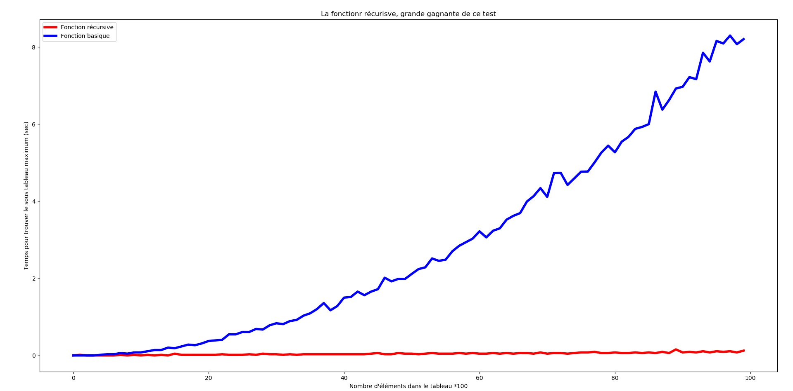

Algorithmique et complexité
Récursivité
Pépin Rémi, Ensai, 2019

Récursivité
L'exemple que tout le monde utilise : la fonction factorielle
La fonction factorielle
Comment coder ça ?
Deux solutions
- Méthode itérative
- Méthode récursive
Méthode itérative : principe
Découper un problème en n sous problèmes similaires, puis les résoudre les uns à la suite des autres de la même façon .Utilisation des boucles
Méthode itérative : le code
def facto_iter(a):
facto = 1
for i in range(1, a + 1):
facto = facto * i
return facto
Méthode récursive : principe
Résoudre un problème en le découpant en sous problèmes similaires que l'on va résoudre de la même façon jusqu'à trouver un problème simple à résoudre.Utilisation de fonctions récursives
Méthode récursive : le code
On sait que
Ce qui devient
def facto_rec (a):
return a * facto_rec (a-1)
Run the code
Les conditions d'arrêt
Tel quel notre programme tourne jusqu'à saturation de la pile
Il faut lui dire quand s'arrêter
def facto_rec (a):
if a == 0 :
return 1
else :
return a * facto_rec (a-1)
Forme générale
Une fonction récursive doit posséder
- Une cas récursif
- Une condition d'arrêt
Forme générale
def fct_rec (a):
if cdt_arret :
# On sort de la récursion :
# ie on n'appelle plus la fonction
return something
else :
# On reste dans la récursion :
# ie on appelle la fonction à un moment
somecode()
fct_rec (b)
somecodebis()
return some_other_thing
Une fonction qui s'appelle elle même ?
Un exemple pratique !
Comment ça marche ?
- Différence entre le code de la fonction et l'exécution
- Une fonction est un objet python stocké en mémoire (parties fixes + variables)
- Pour l'exécuter python va chercher l'objet en mémoire
- Et passe les paramètres
- Même définition mais différentes fonctions exécutées
Fonction as object
En python, une fonction est un objet
- Attributs
- Méthodes
- Peut-être un argument de fonction
Fonction as object
def dummy_function(element):
element = element + 1
return element
print(type(dummy_function))
def apply_function (nombre, function):
return function(nombre)
print(apply_function(1,dummy_function))
D'autres exemples
Récursivité croisée
def pair(n):
if n-1 :
return impair(n-1)
else :
return "pair"
def impair(n):
if n-1 :
return pair(n-1)
else :
return "impair"
Récursivité imbriquée
Soit la fonction de Ackermann définie par :Récursivité imbriquée
def ackermann(M, N):
if not M:
return N + 1
else:
if not N:
return ackermann(M - 1, 1)
else:
return ackermann(M - 1, (ackermann(M, N - 1)))
Récursivité multiple
Soit la fonction coefficient binomial définie par :Récursivité multiple
def coef_binomial(n, p):
if n > p > 0:
return coef_binomial(n - 1, p - 1) + coef_binomial(n - 1, p)
else:
return 1
Des questions ?
La pile
C'est quoi la pile
- Mémoire des fonctions appelées
- Structure Last In - First Out (LIFO)
- Permet de toujours savoir où l'on se trouve !
Voir la pile
def print_stack():
for tid, frame in sys._current_frames().items():
# skip this frame
frame = frame.f_back
while frame:
code = frame.f_code
print("File {}, line {}, in {}".format(
code.co_filename,
frame.f_lineno,
code.co_name,
))
frame = frame.f_back
def bar():
print_stack()
def foo():
bar()
def main():
foo()
if __name__ == '__main__':
main()
Autre façon : avoir une erreur
def bar():
print_stack()
def foo():
bar()
def main():
foo()
if __name__ == '__main__':
main()
Autre façon : avoir une erreur
Traceback (most recent call last):
File "stack_error.py", line 11, in
main()
File "stack_error.py", line 8, in main
foo()
File "stack_error.py", line 5, in foo
bar()
File "stack_error.py", line 2, in bar
print_stack()
NameError: name 'print_stack' is not defined
Autre façon : avoir une erreur
Python (et d'autres langages) affiche la pile en cas d'erreur. Utilisez la pour débugger votre programme !A votre avis, qu'elle est le problème majeur de la récursivité ?

Source : Medium
La mémoire et la pile !
- Chaque fonction va consommer un peu de mémoire, ce qui n'est pas top !
- Mais la pile à une limite elle aussi (paramétrable)
- Et votre OS à lui aussi une limite (~ ordre du millier, fixe)
- On peut pas faire de la récurisivité infinie

Les avantages de la récursivité

Source : freecodecamp
Les avantages de la récursivité
- Solution élégante
- Très claire (pour qui est familier avec)
- Donc facile à débugger
- Très pratique pour naviguer dans un graphe
- Permet de réduire la complexité d'un algo
Deux astuces d'optmisation
- Tail call optimization
- Mémorisation
Tail call optimization
Optmisation qui permet de limiter l'espace mémoire d'une fonction récursive. On stocke juste l'appel à la fonction et pas le résultat intermédiaire.Pas implémenté en python
Possible de le faire soi même
Mémorisation
Optmisation qui permet d'accélerer une fonction récursive. On stocke les résultas intermédiaires que l'on va réutiliserObligation de le faire soi même
Mais c'est simple
Mémorisation
cache = {}
def fibonacci_opt(n):
if n in cache:
return cache[n]
if n < 2 :
value = 1
else :
value = fibonacci_opt(n-1) + fibonacci_opt(n-2)
cache[n]= value
return value
Diviser-pour-régner

Source : Wikiepdia
Diviser-pour-régner : le principe
-
Diviser le problème en sous instances plus petites du problèmes
-
Régner en résolvant les sous problèmes de manière récursive ou les résoudre si taille réduite
-
Combiner les solutions pour produire la solution du problème originel
Petit aparté
La philosophie de diviser un problème en sous instances plus simples pour les résoudre et combiner les résultats se retrouve dans le calcul distribué => map-reduceLes algo célèbres
- Problème du sous-tableau maximal
- Tri-Fusion
- Algo de Strassen : multiplication de matrices
- Algo de Karatsuba : multiplication de grands nombres
Sous-tableau maximal
Le problème
Extraire un sous tableau avec la somme la plus grande| 13 | -3 | -25 | 20 | -3 | -16 | -23 | 18 |
| 20 | -7 | 12 | -5 | -22 | 15 | -4 | 7 |
Solution basique
Tester tous les sous-tableaux. Au maximum \(O(n^2)\) calculs.Possible de faire mieux ?
Divisons le problème en trois
Si on coupe le tableau en deux :
- Sous taleau maximum à droite
- Sous taleau maximum à gauche
- Sous tableau à cheval sur les deux parties
Problème du "tableau milieu"
Trouver le tableau à la somme max contenant le "milieu"Comment faire ça ?
Problème du "tableau milieu"
import math
def trouver_sous_tableau_milieu(tableau):
somme_gauche = None
somme = 0
tableau_size = len(tableau)
milieu = math.trunc(len(tableau)/2)-1
# initialisation gauche
max_gauche = milieu
somme_gauche = tableau[milieu]
for i in range(milieu, -1, -1): #sens inverse
somme +=tableau[i]
if somme > somme_gauche :
somme_gauche = somme
max_gauche = i
# initialisation droite
max_droite = milieu+1
somme_droite = tableau[milieu+1]
somme = 0
for i in range(milieu +1, tableau_size):
somme += tableau[i]
if somme_droite is None or somme > somme_droite :
somme_droite = somme
max_droite = i
return tableau[max_gauche: max_droite+1]
Résolution finale
def trouver_sous_tableau_max(tab):
if len(table) == 1 : # cas terminal
return tab
else : # cas récursif
milieu = len(tab)/2
tab_gauche = trouver_sous_tableau_max(tab[:milieu])
tab_droit = trouver_sous_tableau_max(tab[milieu:])
tab_milieu = troouver_sous_tableau_milieu(tab)
if tab_gauche > tab_droit and tab_gauche > tab_milieu :
return tab_gauche
elif tab_droit > tab_gauche and tab_droit > tab_milieu :
return tab_droit;
else :
return tab_milieu
Conclusion
- Complexité de l'algo basique : \(\Theta(n^2)\)
- Complexité de l'algo diviser-pour-regner \(\Theta(nln_2(n))\)
Est-ce vraiment un gros gain ?
Bilan récursivité
- Code très compact
- Limite les redondances
- Peut permettre de réduire la complexité d'un algo (diviser-pour-régner)
- Consomme mémoire + pile
- Python n'est pas optmisé pour en faire